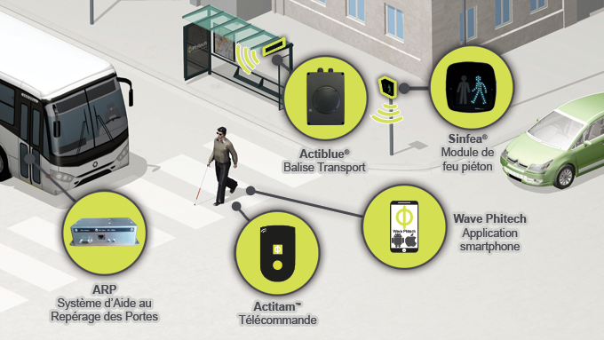
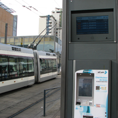
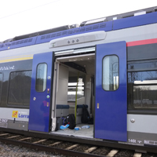
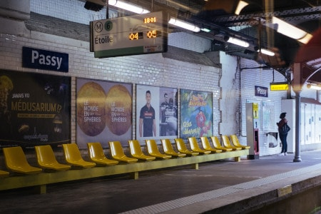
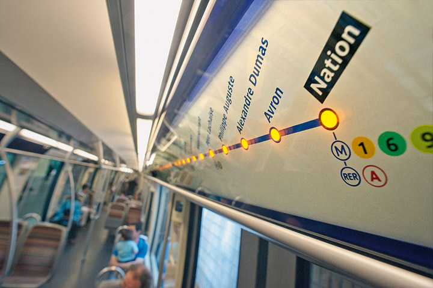
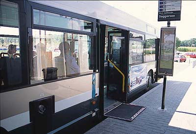

INNOVATIONS
Types d'innovations :
- INFORMER ET ORIENTER LES VOYAGEURS DÉFICIENTS VISUELS :

Dans la chaîne de déplacement du déficient visuel, l’accessibilité des transports est probablement le point le plus important puisque c’est le seul moyen lui permettant de se déplacer seul. Cependant, la complexité des transports (vastes halls de gare, nombreuses lignes, horaires, …) amoindrit l’autonomie du voyageur non ou malvoyant, d’autant plus s’il s’agit d’un trajet non familier.
- - Actiblue transport est un système d’information voyageur vocalisé. Il traduit l’information des panneaux d’affichage et permet aux voyageurs de connaître, par exemple, le prochain passage d’un tramway, le quai d’un train, la direction du véhicule, etc.
- - L’ARP, Aide au Repérage des Portes, facilite l’accès aux trains grâce à la sonorisation des portes.

Actiblue Transport
ARP - Aide au Repérage des Portes
- Solutions pour les usagers sourds et malentendants :
- Les bornes d’information voyageur :
Les bornes d’information voyageurs fleurissent partout dans le monde, comme à Manchester , Barcelone , paris ...etc , situées sur les quais, dans les gares, les stations et à l’intérieur des véhicules et des wagons, elles délivrent aux usagers de l’information écrite utile et fiable. La plupart des bornes à bord des véhicules informent sur le prochain arrêt. Certaines vont jusqu’à annoncer les lieux d’intérêt et les commerces à proximité.
- Le bip lumineux :
De nombreuses villes dans le monde entier comme Lisbonne, paris ou Singapour ont équipé leurs portes de métro et de tramway d’un voyant lumineux clignotant à l’intérieur et à l’extérieur. Le voyant accompagne le bip sonore pour éviter tout franchissement des portes lors de leur fermeture.

Bornes d’information voyageur
Bip lumineux
- Les bornes d’information voyageur :
- Solutions pour l'handicap moteur:
- Boutton de demande d'arrêt :
Dans 95% des transports en commun en europe , on retrouve cette innovation dédiée pour les personnes à mobilité réduite , qui est un boutton de demande d'arrêt adapté à la situation d'handicap.
- palette retractable :
sur chaque arrêt des transports , on retrouve marqué , sur le sol , l'espace dédié aux personnes à mobilité réduite pour faciliter la demande de cette palette.
Boutton de demande d'arrêt

Palette retractable- Boutton de demande d'arrêt :